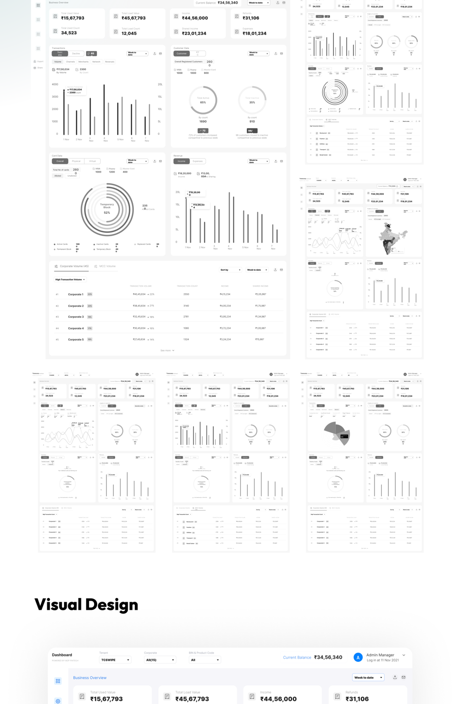

Stage 04
Prototype
Making a drill-down hierarchy feel like one screen, not five
Information Architecture
Split by outcome, not by audience
Transaction data split into Success and Decline views from the top, each breaking down by volume, channel, merchant, reason, and network — with a parallel structure for card data by status and activity. Customer Data and Card Data both needed a view-by-network and view-by-business path, because a partner and an M2P operator enter the same data from opposite directions.
User Flows
The drill-down task, entry to insight
Open dashboard→
Select tenant/network/business filter→
View success/decline breakdown→
Drill into reason/channel
Wireframing
Data-focused first, unstyled on purpose

Fig 05 — Wireframes for the transaction, customer, and card data views
Interaction Design
Hierarchy, infographics, segmentation
The finished dashboard leans on three ideas traceable directly to research: a hierarchical structure with filters visible at every level, infographics that let people stay at their preferred zoom level (trend line or raw number), and segmentation that lets the same dataset be read by network, business, or customer range.

Fig 06 — The shipped dashboard, switchable by tenant, network, and business
The takeawayA four-layer hierarchy doesn't have to feel like navigating four layers, as long as every filter is visible from wherever you currently are.